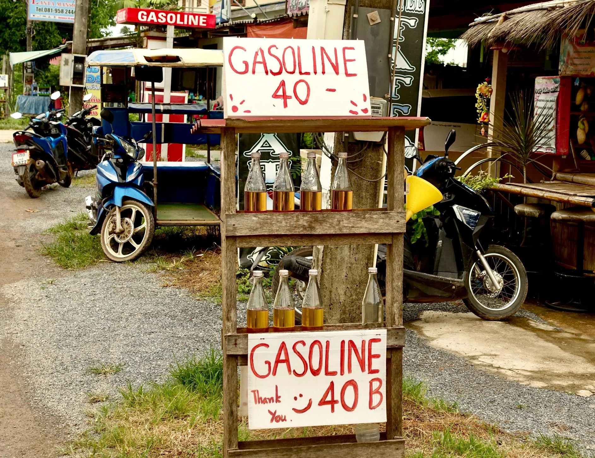
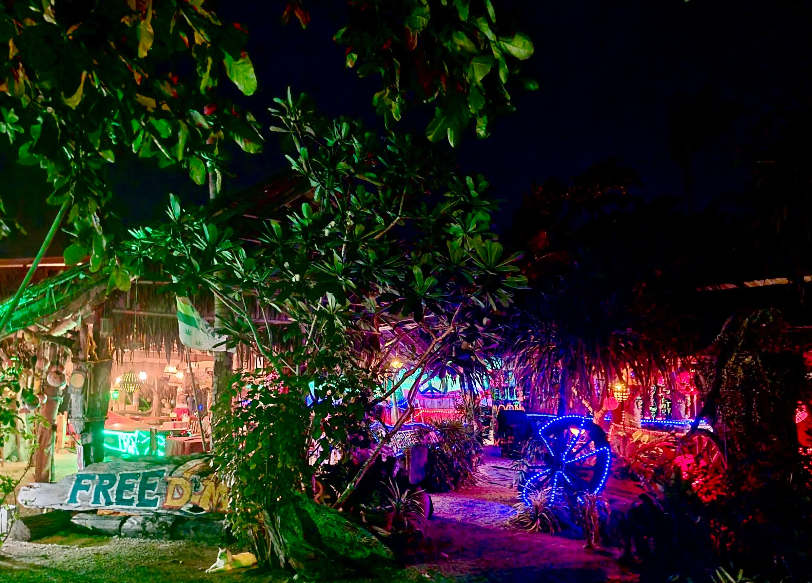
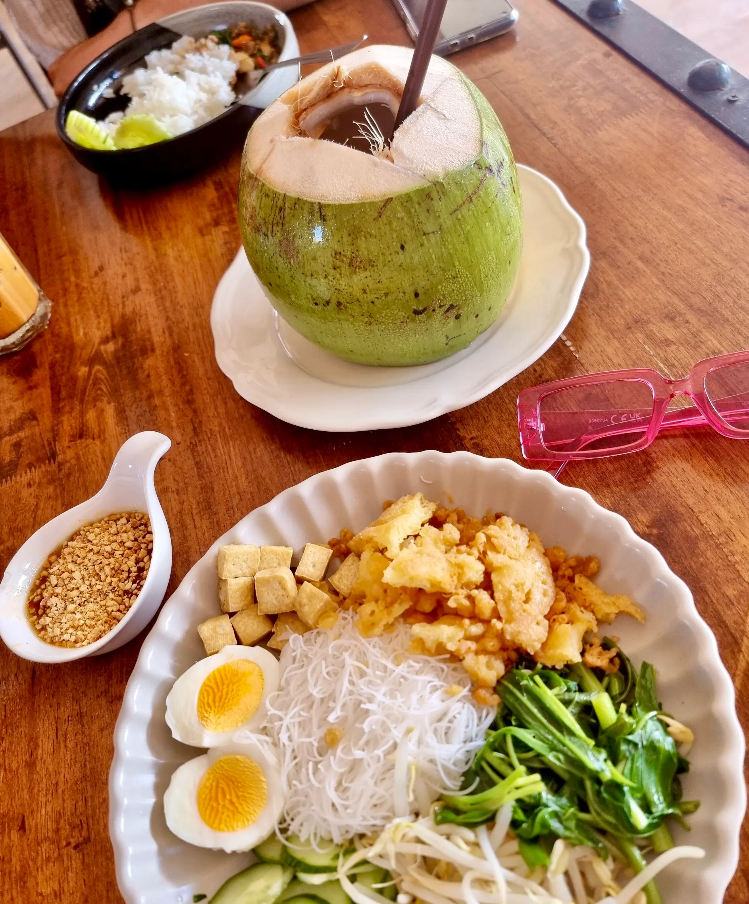
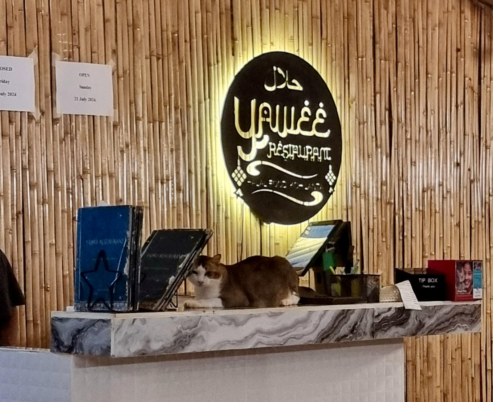
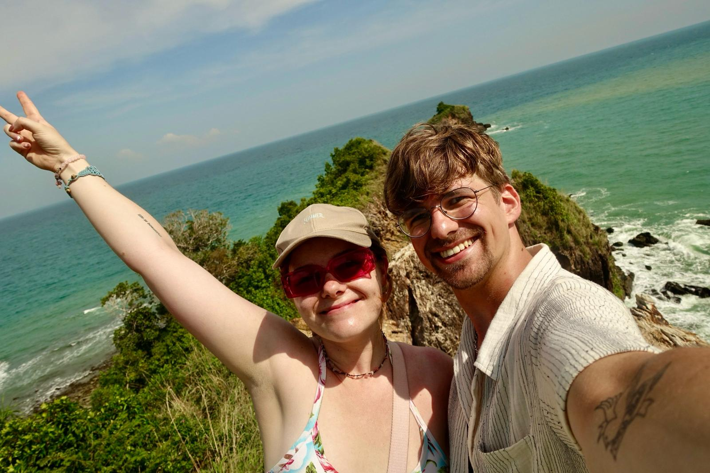
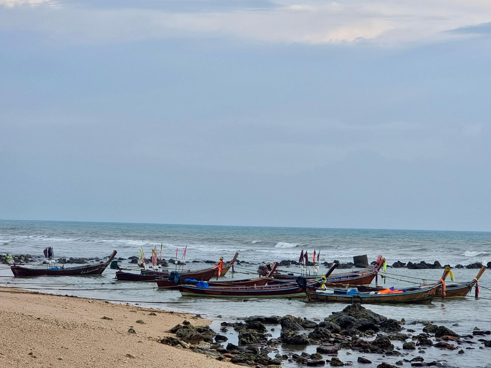
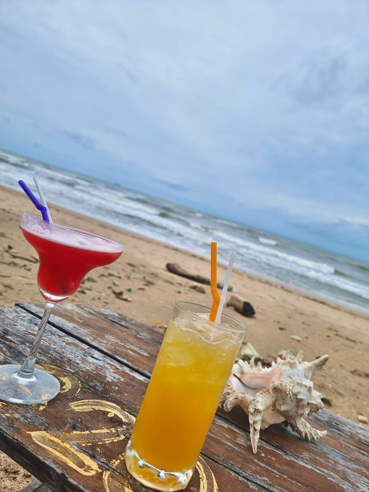
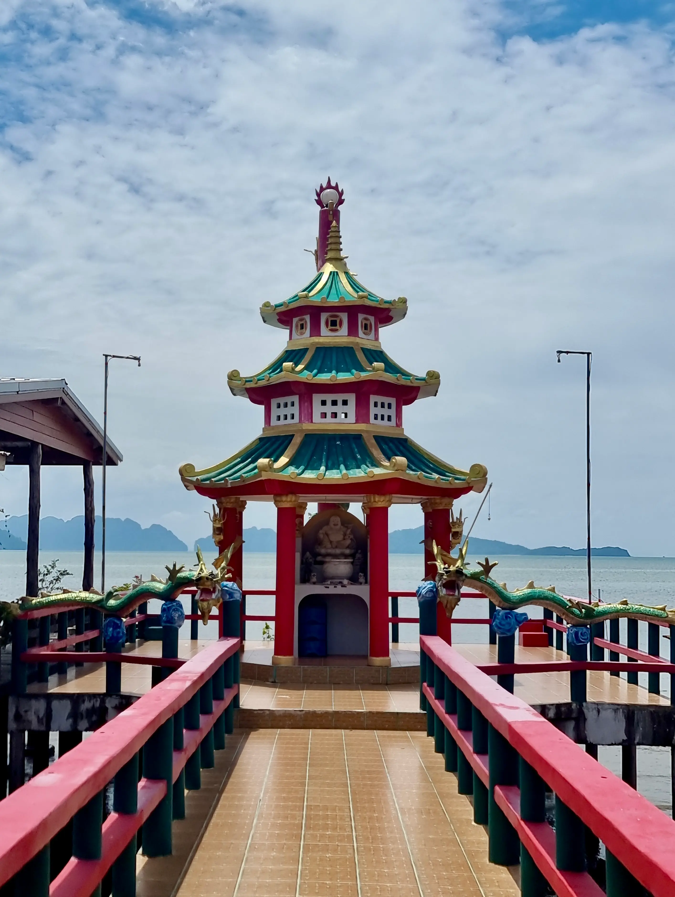
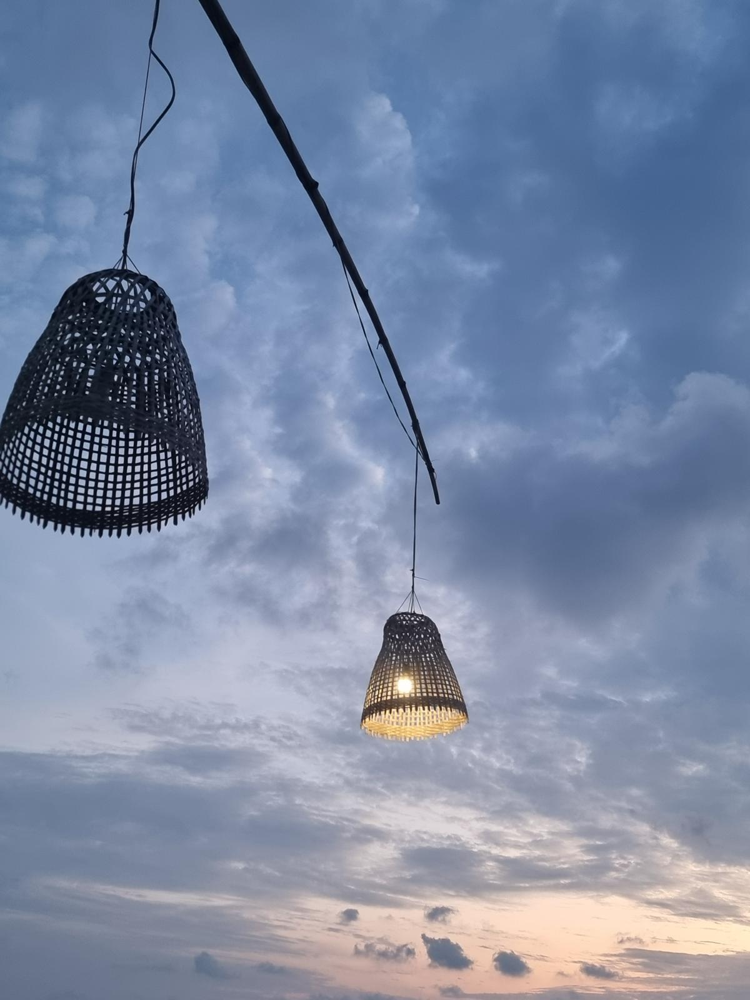

Von Krabi geht es vier Stunden nach Koh Lanta. Insel Lanta ist eine vorgelagerte Insel, die relativ klein und verhältnismäßig weniger touristisch ist als ihre große Schwester Phuket. Da wir eher Ruhe und Natur haben wollen, haben wir uns dafür entschieden. Mit dem Van inklusive VIP-Disco-Innenausstattung aus den 2000ern fahren wir weg aus den Kalksteingebirgen zu flacherer Landschaft und dann per Fähre auf die Insel.
Schon bei unserer Ankunft merken wir, dass die Insel aus nicht viel mehr besteht als Strand und einer langen Straße, die sich die gesamte Westküste entlangzieht. Lanta ist in etwa geformt wie Sylt. Die Hauptstadt findet sich lustigerweise an der Ostküste, also eben nicht an der Hauptstraße.
Unser Hotel ist im Westen, am etwas entspannteren "Hippie"-Strand Khlong Khong Beach. Die Unterkunft ist die schlechteste bis jetzt: Der Toilettensitz ist dreckig und als wir Bescheid sagen, wird einmal trocken darüber gewischt und Febreze gesprüht. Danke dafür. Abgesehen davon ist das Zimmer in keinem guten Zustand und es gibt wie hier leider häufig keine Duschkabine, sodass man sich praktisch über der Toilette duscht.
Wir beschließen das Beste daraus zu machen, weil wir ja viel Zeit draußen verbringen. Und immerhin gab es an der Rezeption ein süßes dickes Kätzchen.
Wir laufen die Straße entlang auf der Suche nach Essbarem und stranden erst mal in einem 7 Eleven. Julius kauft ein kleines Lego Collectable in Form von thailändischen Fahrzeugen. Wir bekommen ein Songthaew, die typischen Sammel-Taxen aus Chiang Mai, die auch hier im Süden auf den Straßen unterwegs sind. Wir bauen es zusammen, während wir auf unser reichhaltiges Essen warten: Naan mit Knoblauch, Frühlingsrollen und grünes Curry.

Wir geben mal wieder unsere Wäsche ab (dringend nötig) und entdecken einen Weg von der Hauptstraße aus zum Strand. Der führt durch eine Strandbar, die aus diversen unterschiedlichen Hölzern und Bäumen zusammengebaut ist; überall hängen wunderschöne Windspiele aus Muscheln und alles ist mit bunter Farbe bekleckst. Es gibt kaum Besucher und die Atmosphäre sehr entspannt. Die Cocktails schmecken gut, also genießen wir gleich zwei in erster Reihe am Strand.
Wir können durch den Sand zurück zu unserem Hotel laufen. An einer Stelle muss ich Julius huckepack nehmen, weil er nur Sneaker anhat und an einer Stelle nicht über einen kleinen Kanal kommt.

Der Plan für den nächsten Tag: Erst mal ausschlafen, dann einen Roller mieten, die Wäsche abholen, Mittag essen und zum Nationalpark ganz im Süden der Insel.
Mittag essen wir im Yawee, einem Restaurant das die beste Bewertung auf Gopogle hat und in dem mindestens drei dicke Katzen herumlaufen. Die Bewertung war rechtmäßig: Ich esse einen thailändischen Salat aus Glasnudeln, frittiertem Tofu, Ei, Sprossen, Gurke, irgendeiner Art gedünstetem Spinat und gebratenem Teig und einer süßlichen herzhaften Sauce. Sowieso ist hier in Thailand oft immer Herzhaftes irgendwie süß.
Der Salat jedenfalls schmeckt himmlisch. Julius hat ein Curry bestellt. "Scharf?", fragt die Kellnerin. Ein gefährliches Spiel: Wenn man nein sagt, kann es geschmacksneutral sein und auf die europäische Zunge angepasst. Bei Ja weiß man nie, wie scharf scharf genau ist. Da wir inzwischen an die Schärfe gewöhnt sind, antwortet Julius stolz: "Ja, gerne scharf" und kriegt letztendlich Schluckauf vor Schärfe. Die Kellnerin geht vorbei und versucht hinter vorgehaltener Hand ihr Lachen zu verstecken.

Der dicke Kater (und scheinbar Boss des Restaurants) steckt sich müßelig auf die Theke und schmeißt die Box für Trinkgeld und die Spendenbox für Straßenkatzen herunter. Als Strafe wird ihm der Kopf getätschelt und die Box etwas weiter nach links gezogen.

Die Fahrt zum Nationalpark ist abenteuerlich. Die Straßen auf Lanta sind -abgesehen von den ersten paar Kilometern der Hauptstraße- erstaunlich steil. Mit stolzen 15 km/h trotz Vollgas krebsen wir Richtung Süden, vorbei an Stränden und kleinen Läden und Bars. Von denen scheinen einige bis zur Hauptsaison im September geschlossen zu haben.
Insgesamt haben wir auf Lanta das Gefühl, dass die Insel ein bisschen in einer Art Winterschlaf ist. Es sind für die Menge an Resorts wenig Touristen unterwegs und auch die geöffneten Restaurants und Bars sind nur spärlich besucht. Uns gefällt das ganz gut.
Wir halten noch an einem wunderschönen Laden, in dem zwei totel nette Frauen handgemachtes aus Lanta verkaufen. Wir schauen uns lange um und kaufen natürlich ein paar Dinge für die daheimgebliebenen und uns. Die Frauen geben uns noch winzige Bananen aus ihrem Garten mit, die ganz anders als unsere schmecken, dann geht es weiter.
Der Nationalpark ist ziemlich klein und besteht im Prinzip nur aus einem Leuchtturm, den wir unter Schweiß und praller Sonne erklimmen, und zwei Stränden. An dem einen kann man sogar schwimmen.

Dazu kommen wir aber fast nicht, weil wir die ganze Zeit Einsiedlerkrebse beobachten. Es gibt Hunderte, nein, Tausende auf diesem Strand, so viele wie ich sie noch nie gesehen habe. Jede Schneckenmuschel hat entweder ein Loch (und ist somit unbewohnbar) oder bereits ein Eigenheim. Von Kirschgroß reichen ihre hübschen Häuser bis handflächengroß. Sie sind rot, weiß, algig und perlmuttfarben.
Fleißig schleppen sie ihre Behausung über den Sand, auf der Suche nach einem größeren Haus. Manchmal kullern sie von den Wurzeln am Ufer wieder herunter und machen sich dann unbeirrt weiter auf den Weg.

Wir finden einen Krebs, der eine beschädigte Muschel hat, die noch dazu viel zu klein ist. Wir suchen nach einer neuen Muschel für ihn, finden aber keine. Einmal fällt er aus seiner Muschel heraus und liegt ganz sandig und nackt am Boden. Schnell legen wir ihn wieder hinein und setzen ihn rückwärts wieder ein. Dann packt er die Muschel ein und zieht weiter.
Irgendwann lösen wir uns von dem Spektakel und spielen in der Brandung. Es macht einen Heidenspaß und das Wasser ist zwar lauwarm, aber trotzdem erfrischend.

Müde kraxeln wir kurz vor Schließung des Parks wieder die Berge hoch und runter. Abends probieren wir natürlich noch andere Cocktails in der Freedom Bar und essen im Yawee ein köstliches Abendbrot.
Der letzte Tag in Lanta, bevor wir von Thailands Westküste in den Osten in den Golf von Thailand reisen werden. Wir haben immer noch unseren Roller und fahren in die Altstadt, ein Örtchen an Fähranlegern, das aus vielen Restaurants besteht, die sich alle in der Länge ihres ins Wasser ragenden Steges übertreffen wollen.
Man geht über Holzdecks durch die Läden und sieht unter einem das Wasser schwappen - fast wie in Venedig. Wir schauen in ein paar Läden, ich bin scharf auf Muschel-Mobiles, kaufe dann aber doch keines.
Die Stimmung ist eher mittelmäßig, weil es warm ist, also essen wir erst mal Frühstück. Das gibt es bei Grandmas Kitchen. Der Begriff Frühstück ist hier breit aufgestellt: Julius gönnt sich zwar ein Sauerteigbrot mit Avocado, Bacon und Ei, ich aber bestelle auf Anraten vom Nebentisch einen Mango Crumble mit hausgemachtem Vanilleeis.
Das Eis schmilzt über dem warmen Mürbeteig, die Mango ist saftig und weich. Ich weiß jetzt schon, dass es mir von dem reichhaltigen Essen bei den Temperaturen schlecht gehen wird, aber es schmeckt himmlisch.
Wir entdecken einen Laden, der handgefertigte Hängematten herstellt und schauen uns dann noch weiter in der Stadt um. Ich bin zwischendurch immer wieder damit beschäftigt, Hotels für unseren nächsten Stopp zu finden.
Dann fällt mir auf, dass die Buchung für unser jetziges Hotel falsch ist und wir vor einer halben Stunde hätten auschecken müssen. Die Angst ist groß. Niemand im Hotel ist zu erreichen. Also fahren wir hektisch die halbe Stunde zurück, nur um uns in gebrochenem Englisch sagen zu lassen, dass das okay ist, weil wir ja drei Nächte gebucht hatten und einen Tag später als geplant gekommen waren.
Also umsonst gestresst. Wir ruhen uns erst mal im Zimmer unter der Klimaanlage aus. Dann merken wir, dass wir noch an die Hängematten denken müssen und beschließen, uns eine zu kaufen, selbst wenn das heißt, dass wir sie den restlichen Urlaub herum schleppen müssen.

Also die halbe Stunde wieder zur Altstadt. Wir entscheiden uns für eine gewagtere rot-orange-gelbe Variante mit Fransen, die wir in unser neues Wohnzimmer hängen wollen.
Mit dem Stress ist der Tag leider schnell vergangen. Yawee hat heute zu, also essen wir bei dem Restaurant, bei dem wir das kleine Songthaew gebaut hatten. Um die Tradition zu wahren, bauen wir dieses Mal ein kleines blaues Tuk Tuk zusammen und essen wieder gut.
Dann geben wir den Roller ab und gehen - na? - einen letzten Cocktail trinken. Einen in der Freedom Bar und dann noch einen hinreißenden Mango Daiquiri in der Bar vom Coco Eco Resort.
Wir sitzen in Sitzsäcken und lauschen der Brandung. Gerne wäre ich länger auf Lanta geblieben. Die Insel ist wirklich schön und viel ruhiger als Krabi. Ich bin traurig, dass sich unsere Reise dem Ende neigt und wir uns nicht mehr wie am Anfang die Freiheit nehmen können zu sagen: „Komm, wir verlängern zwei Nächte.“
